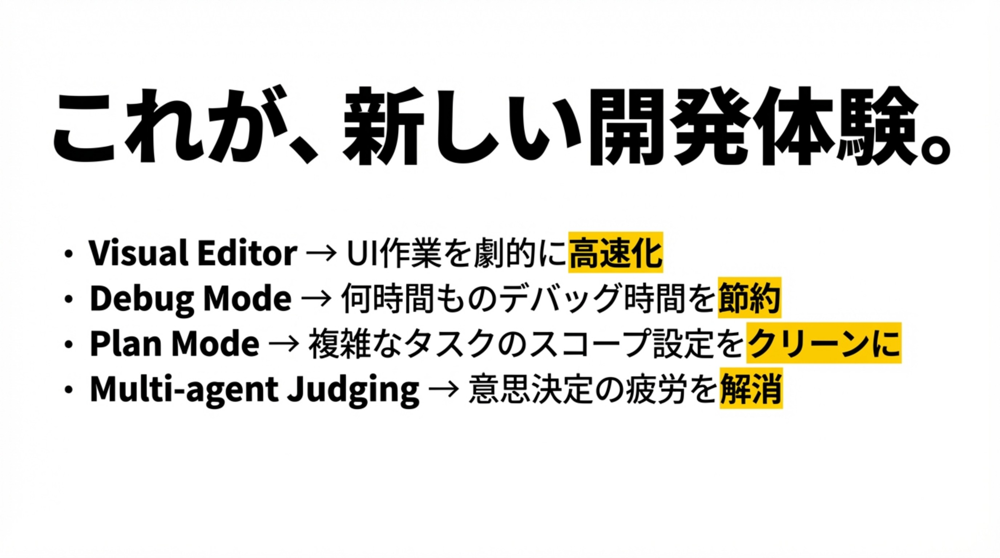
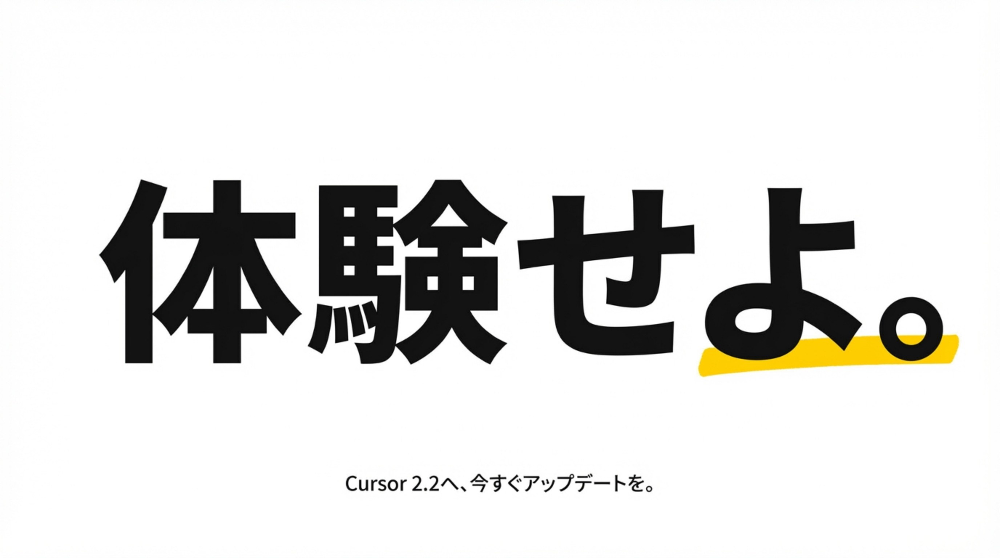
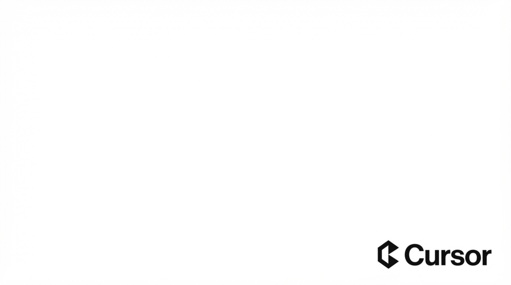

Cursorが描く「未来の開発体験」：思考とコードの直結
「ツール」から「思考の拡張」へ
Cursorは単なるAIコードエディタではありません。「デザインとコードのギャップを埋める」こと、そして「開発作業の抽象レベルを引き上げる」ことを通じて、開発者が「How（方法）」ではなく「What（目的）」に集中できる未来を目指しています。
✨ Cursorの2つの核心コンセプト
- 1. デザインとコードの融合： 中核機能「Visual Editor」により、Webアプリ、コード、ビジュアルツールをシームレスに操作。Figmaのような直感操作がコードに直結します。
- 2. 抽象レベルの向上： 複雑な実装手順（How）はAIに任せ、開発者は本質的な目的（What）の表現に集中。「デバッグ」「計画」「判断」のあり方を再定義します。
抽象化された新しい開発体験
Debug Mode
「推測」での試行錯誤は終了。バグを言葉で説明するだけで、ログ収集・分析から修正案の提示までAIが完遂。
Plan Mode
複雑なタスクを自動でフローチャート化し、実装計画を立案。タスクを分割して並列実行も可能に。
Visual Editor
UI要素をクリックして「赤にして」と言うだけ。CSSプロパティを覚えなくても、直感的にデザイン調整が可能。
開発プロセスのBefore / After
| フェーズ | これまで (従来) | Cursorが描く未来 |
|---|---|---|
| デザイン調整 | コード修正 ⇄ ブラウザ確認の往復。 CSSプロパティの手探り。 |
Visual Editorで直接操作。 自然言語で「見た目」を指示。 |
| デバッグ | 「たぶんここ？」と推測し、大量のログを目視確認。 | Debug Modeが原因特定。 クリーンな修正コードを即提示。 |
| 意思決定 | どの実装が良いか、自分で調べて試して悩む。 | Multi-agent Judgingが 複数案から最適解を理由付きで推奨。 |
💡 Vision: 人間は「思考」そのものに時間を使う。これがAI支援開発のあるべき姿です。
レポート全文 (PDF)




